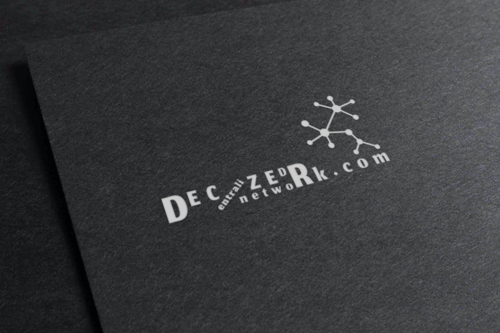
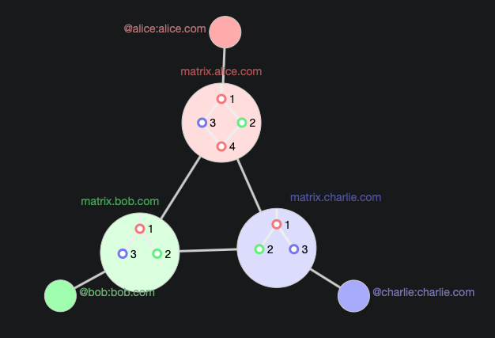

What is Decentralized Network?
The primary difference between centralized and decentralized communication networks has to do with the question of who has control over the network itself.
Decentralized networks are organized in a much more distributed fashion. Each node within the network functions as a separate authority with independent decision-making power regarding how it interacts with other systems. These networks also distribute processing power and workload functions among connected servers.
